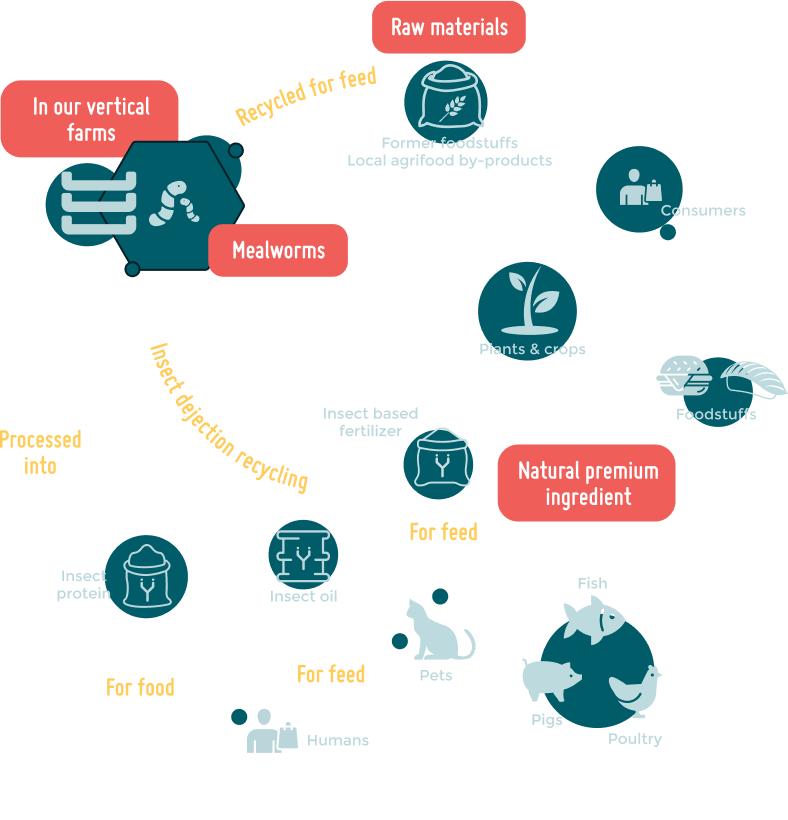
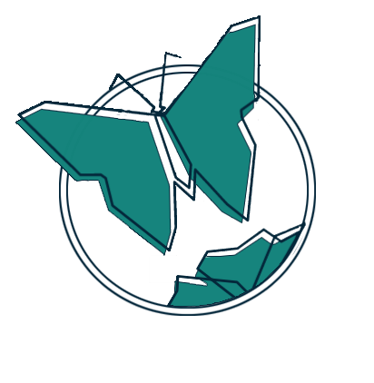

La data de 9 Decembrie 2022 a fost formată echipa 'Insectus', cu ocazia unei competiții antreprenoriale organizate de universitate, la care au obținut performanțe foarte bune. Astfel, le-a fost confirmată necesitatea unei ferme de insecte și proiectul a fost demarat la scară largă.
Misiunea lor este de a rezolva criza alimentară prin oferirea unor alternative superioare, mai ieftine și mai inteligente pentru planetă: insectele.
De ce insecte?
Creșterea accelerată a populației. Suntem 8 miliarde de oameni pe Pământ, un nou record stabilit recent, iar acest număr va continua să crească. Până în 2057 populația lumii va crește la 10 miliarde, iar acest fapt provoacă îngrijorare, în special din cauza deficitului de hrană din anumite zone geografice. Avem nevoie urgent de o sursă de hrană calitativă, accesibilă, și care folosește eficient resursele planetei.
Insectele sunt soluția noastră! Greierii, viermii, muștele și cărăbușii sunt surse de proteine de calitate, surse de aminoacizi, fier, calciu, vitamina B3, B6 și altele.
De ce Insectus?
Insectus va fi singura fermă din România și Estul Europei care va produce soluții nutriționale, mai calitative și mai ieftine față de alternativele tradiționale destinate antreprenorilor din sectorul primar al economiei- agricultura.
Profilul clientului
Clienții noștri vor fi marile companii care activează în domeniul agriculturii și creșterii animalelor, dar și persoanele fizice: fermieri, pescari, grădinari. Ei sunt antreprenori cu o vârstă cuprinsă între 25 și 65 de ani, locuiesc preponderent în mediul rural, sunt pasionați de agricultură, creșterea animalelor sau piscicultură. Aceștia își doresc să ofere animalelor o hrană calitativă, bogată în vitamine, minerale și proteine la un preț cât mai avantajos.
"The Loop of Life"
Fiecare stadiu al vieții unei insecte are un loc bine definit si corelat cu celelalte stadii. Astfel, de la stadiul de larvă, până la maturitate si inapoi la larvă, nimic nu se pierde ci totul se consumă!
Soluția noastră
Insectele produc mai puțin gaz cu efect de seră si folosesc de mai puține furaje.
Cantitatea de apă si teren pentru producerea unui gram de proteină.
Greierii conțin la fel de multă proteină ca si alte surse animale, si mai mult fier.
Pentru mai multe detalii despre achiziționarea produselor, contactați-ne
Informații de contact
Telefon: +40745 234 567
Email: contact@insectus.ro
Locație: str. Aleea Studenților nr. 2000
